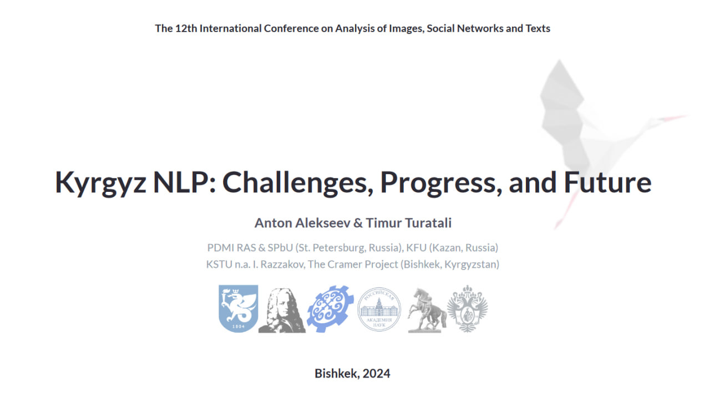

KyrgyzNLP: Browsing, Bibliography, and Scientometrics
{% for nav in site.nav %}
{{ nav.name }}
{% endfor %}
This is a webpage accompanying the talk
KyrgyzNLP: Challenges, Progress, and Future
given on October 18th, 2024 at the
AIST-2024
conference.
KyrgyzNLP Bibliography Browser
Co-authorship Graph
